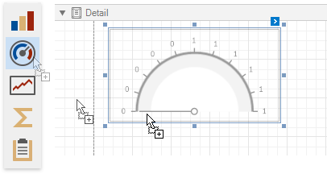
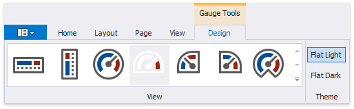
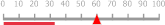
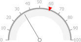
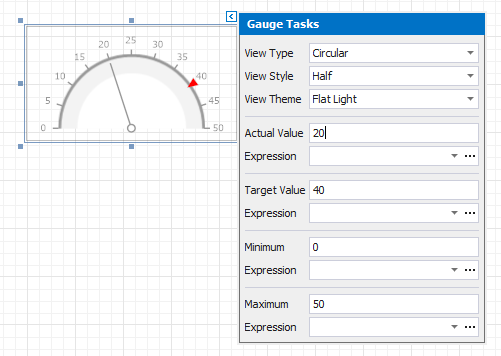
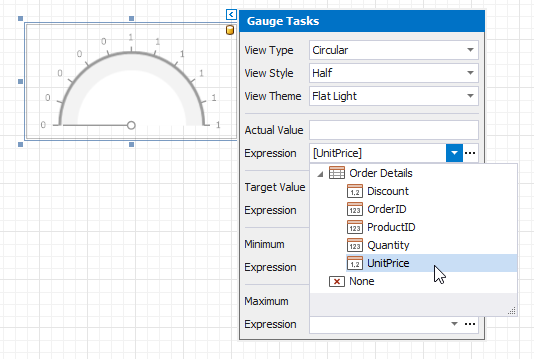

Add Gauges to a Report
Gauge Overview
The Gauge control provides you with the capability to embed graphical gauges into your report.
To add this control to the report, drag the Gauge item from the Toolbox and drop it onto the report.

Use the Toolbar's Gauge Tools contextual tab to select a gauge's appearance.

View
Specifies the type of the displayed gauge. The following view types are available:
Linear

Supported view styles: Horizontal and Vertical.
Circular

Supported view styles: Full, Half, Quarter Left, Quarter Right and Three Fourth.
Theme
Specifies the gauge's color theme. The Flat Light and Flat Dark view themes are supported.

The following properties allow you to customize the gauge scale and specify its displayed values.
- Actual Value - specifies the value displayed by a gauge.
- Target Value - specifies the position of the target value marker.
- Maximum - specifies the gauge's maximum value.
- Minimum - specifies the gauge's minimum value.

Bind a Gauge to Data
To bind the gauge's displayed value to data, click the control's smart tag and in the invoked actions list, expand the Expression drop-down list for the Actual Value property and select the required data field.

In the same way, you can bind the Target Value, Minimum and Maximum properties to data. To do this, expand the Expression drop-down list for the corresponding property and select the required data field.
Clicking the Expression option's ellipsis button invokes the Expression Editor, in which you can construct a complex binding expression involving two or more data fields.